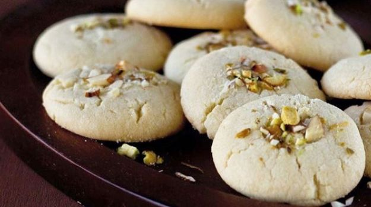

Ingredients
1.All Purpose Flour - 1 cup
2.Unsalted Butter/Ghee - 1/2 cup
3.Powdered Sugar - 1/2 cup
4.Cardomom Powder - 1/4 tsp
5.Baking Powder - 1/2 tsp
6.Salt - a pinch
7.Pistachios/Raisins/Cashews/Almond - for garnish
Method
1. Take a mixing bowl with the room temperature butter in it. Add the powdered sugar to it and cream together till the mixture becomes light and fluffy.
2. Sift all the dry ingredients (flour, cardamom powder, baking powder and salt) into a seperate bowl.
3. Add this to the creamed butter mixture little at a time and keep mixing. Knead it to form a soft dough. Cover the dough and let it rest in the refrigerator for 10-15 minutes.
4. Preheat the oven to 300 degrees F (150 C). Make small gooseberry sized balls of the dough. Smoothen the balls by rolling in between your palm. You can also use a cookie cutter to shape the cookies.
5. Place each ball in a cookie sheet. Leave some space in between as the cookies will expand when it bakes. If you want to make it more rich, press a pistachio or raisin or cashew or almond on top of the balls gently.
6. Bake at 300 degrees for 12-15 minutes until the bottom of the cookies turn light golden brown.
7. Remove from the oven and gently transfer the cookies to a cooling rack. The cookies will be very soft at this stage.
8. After it cools completely, store in an air tight container for upto a month. Serve as a snack with a cup of tea.